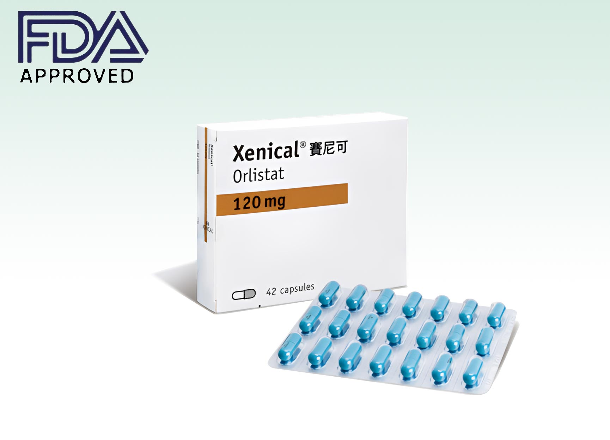
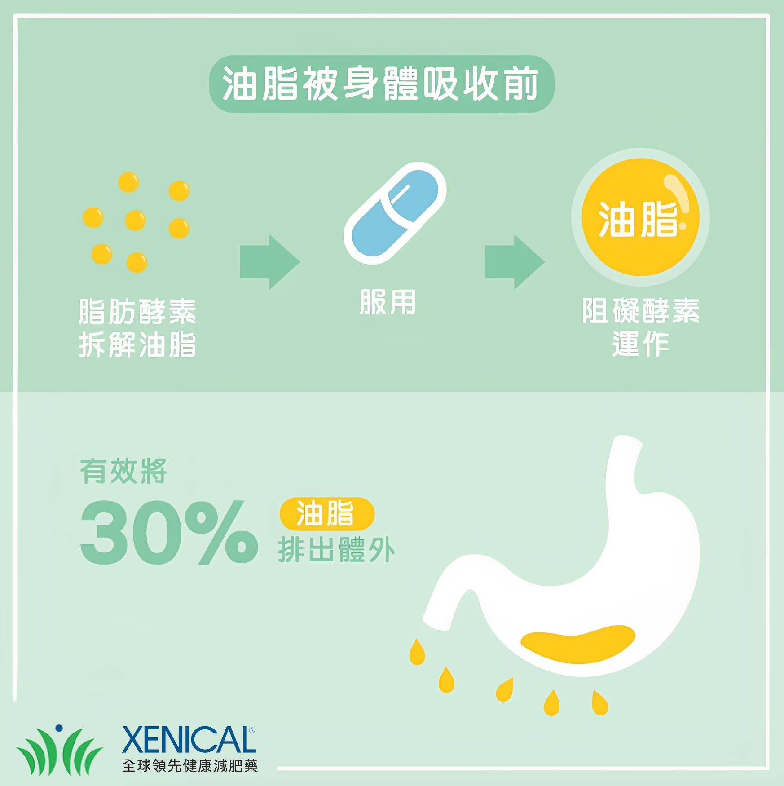
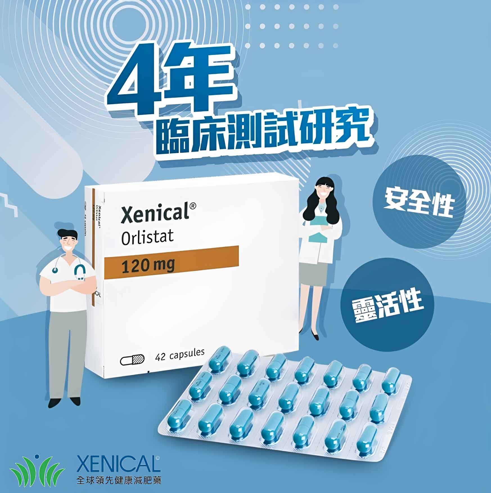

羅氏鮮於一九九八年六月首先在紐西蘭上市，短短兩年裡已獲一百二十餘國核准上市，全世界的使用羅氏鮮人口有八百三十萬人，獲准在台灣上市，各醫院和藥局都有貨，但需要由醫師開立處方購買。
羅氏鮮中文名於2018年由「羅氏鮮」變更為「羅鮮子」，學名是Orlistat，英文名稱是Xenical，由於廣大民眾習慣的名稱是羅氏鮮，本文以羅氏鮮名稱進行介紹，羅氏鮮是一款被臨牀上證實會排油的產品，是全球唯一獲得美國FDA、歐盟EMA核可臨床減肥藥物，經臨床研究數據表明，飲食中含油脂，羅氏鮮就會將三分之一油脂排出，而且排油量會與飲食的油脂含量成正比，是一款不錯的減肥藥物。

羅氏鮮的藥效作用方式是在小腸的吸收脂肪過程中，對脂肪分解酵素產生抑製作用，結果是脂肪不能被分解成較小的脂肪酸來吸收，所以就減少了脂肪在人體的吸收量，人體消耗量大於吸收量的時候，就起到了減肥的效果。
使用這個藥物會因為脂肪無法被吸收而產生潤滑性腹瀉，也就是上廁所會拉出一堆油出來，這和吃太多油炸食物，會因為無法吸收那麼多油造成腹瀉的情況是一樣的，並且羅氏鮮不參與消化吸收，不會進入人體血液，不會對身體造成傷害。
作用方式

作用方式是在小腸的吸收脂肪過程中，對脂肪分解酵素產生抑製作用，結果是脂肪不能被分解成較小的脂肪酸來吸收，所以就不太會因為肥肉吃多而發胖。使用這個藥物會因為脂肪無法被吸收而產生潤滑性腹瀉，也就是上廁所會拉出一堆油出來。這和吃太多油條會因為無法吸收那麼多油造成腹瀉的情況是一樣的。
正確服用羅氏鮮三個月體重減少大於5 %時，到第六個月將減重12.4 %以上。積極配合飲食與運動者，其療效更甚於上述之結果。更重要的是使用羅氏減重時，每減10公斤可減去7公斤的油脂體內的脂肪。最重要的是羅氏鮮的副作用比較少。
俗稱“藍色小丸子”、“讓你酷”的減肥藥“羅氏鮮”在台灣上市，限定為醫師處方藥，由於水貨及假貨猖獗，正廠藥的包裝除有雷射防偽標誌，還有特殊的綠色貼紙。
產品展示

銷售
一九九八年六月於新西蘭首先上市，短短兩年已獲一百二十餘國核准上市，全世界的使用人口有八百三十萬人，獲准在台灣上市，各醫院和藥局都有貨，但是要由醫師開立處方，需要減肥的民眾才拿得到。

實驗報告
根據三軍總醫院的臨床試驗報告，羅氏鮮的作用在於抑制脂肪（的吸收，阻斷油脂的吸收，可減去體重的百分之五到十左右，受試者平均半年內可以減三到四公斤。
新聞
減肥藥Xenical(羅氏鮮)日前在台灣上市，但是它不適用於懷孕及哺乳的婦女、肝功能異常、慢性吸收不良、膽汁鬱滯、對成份過敏的民眾，專科醫師也不建議青少年使用，使用後可能會發生放油屁、胃脹氣、失禁等副作用。
台大醫院家醫科減重門診主治醫師黃國晉指出，由於人種體質的關係，美國的大胖子是身高質量指數(BMI，體重除以身高平方的比值)大於三十時，才需要使用羅氏鮮減肥，台灣人再怎麼胖，很少人超過三十，所以一般是超過二十六，才需要減肥。黃國晉說，使用羅氏鮮半年，可以減輕體重的百分之五到十，相較之下，飲食與運動雙管齊下，半年也可以瘦百分之十的體重。青少女追求苗條纖細的體型，永遠嫌自己胖，時時要速效減肥，黃國晉說，青少年尚未發育成熟，不建議使用羅氏鮮減肥。
根據國內外的報告，羅氏鮮的常見副作用是放油屁沾褲、胃脹氣、急便、排油、排便增加及排便失禁，以及搔癢、蕁麻疹等。黃國晉說，羅氏鮮的藥理作用是抑制三分之一的脂肪吸收，所以長期使用，還會造成脂溶性維他命A、D、E、K等維生素缺乏，以及皮膚乾燥，服用三個月後必需補充，而且與羅氏鮮錯開使用。